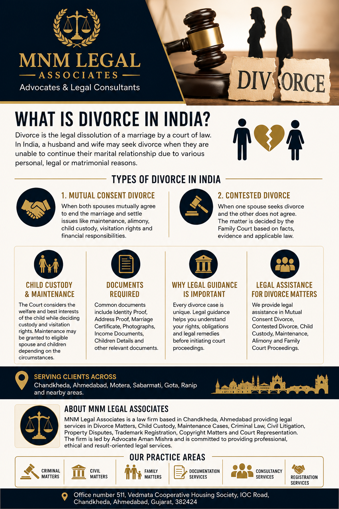

A cheque is one of the most commonly used instruments for financial transactions in India. However, when a cheque is dishonoured due to insufficient funds or other legally recognized reasons, it may result in legal consequences under Indian law.
A cheque bounce can affect both individuals and businesses, making it important to understand the legal procedure, rights and remedies available to the aggrieved party.
A cheque is said to be dishonoured or “bounced” when the bank refuses to honour the cheque presented for payment. This may happen due to insufficient funds, account closure, payment stopped by the drawer, signature mismatch or other valid banking reasons.
Depending upon the facts of the case and applicable law, dishonour of a cheque may give rise to legal proceedings.
Cheque bounce matters are primarily governed by the Negotiable Instruments Act, 1881. The law provides a legal mechanism for the payee or holder of the cheque to seek appropriate remedies when the statutory requirements are fulfilled.
Generally, the legal process includes the following stages:
The cheque is presented before the bank within its validity period.
If the cheque is dishonoured, the bank issues a return memo specifying the reason for dishonour.
The payee may issue a legal demand notice to the drawer in accordance with applicable legal requirements.
If the dispute is not resolved after compliance with the legal procedure, an appropriate complaint may be filed before the competent court, subject to the provisions of law.
Cheque bounce matters involve statutory timelines, procedural requirements and documentary evidence. Proper legal guidance helps ensure that the matter is handled in accordance with the applicable law.
Missing statutory timelines or failing to comply with procedural requirements may affect the legal remedies available in a particular case.
MNM Legal Associates provides legal assistance in Cheque Bounce Cases, Legal Notice Drafting, Recovery Matters, Commercial Disputes, Criminal Complaints and Court Representation.
The firm serves clients across Chandkheda, Ahmedabad, Motera, Sabarmati, Gota, Ranip, New Ranip, Naranpura, Navrangpura, Satellite, Thaltej, Bodakdev, Vastrapur, Science City, Bopal, South Bopal, Paldi, Ambawadi, Shahibaug, Maninagar and nearby areas.
Depending upon the facts of the case and compliance with the applicable legal provisions, a legal notice may be issued before initiating further legal proceedings.
The outcome of every case depends upon its individual facts, evidence and the applicable provisions of law. Courts decide each matter independently.
Yes. Subject to the applicable legal requirements, companies, firms and individuals may initiate legal proceedings in appropriate cases.
Professional legal guidance helps ensure compliance with statutory requirements, documentation and court procedures.
MNM Legal Associates is a law firm based in Chandkheda, Ahmedabad. The firm provides legal services in Cheque Bounce Cases, Criminal Law, Civil Litigation, Commercial Disputes, Recovery Matters, Divorce Matters, Property Disputes, Trademark Registration, Copyright Registration and Court Representation.
The firm is led by Advocate Aman Mishra and regularly publishes legal awareness content to help individuals understand their legal rights and remedies under Indian law.
Keywords: Cheque Bounce Lawyer Ahmedabad, Section 138 Lawyer Ahmedabad, Negotiable Instruments Act Lawyer Ahmedabad, Cheque Bounce Advocate Ahmedabad, Recovery Lawyer Ahmedabad, Commercial Litigation Lawyer Ahmedabad, Criminal Lawyer Ahmedabad, Cheque Bounce Lawyer Chandkheda, Legal Notice Lawyer Ahmedabad, Court Representation Ahmedabad.For Cheque Bounce, Section 138 Negotiable Instruments Act, Money Recovery contact MNM Legal Associates.
Advocate Aman Mishra is a practicing advocate based in Ahmedabad, Gujarat. He regularly writes legal awareness articles on family law, criminal law, civil litigation, matrimonial disputes and consumer rights.